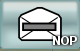

The Field Unit Operator accesses the Field Unit status management through the [STATUS] menu in the main menu bar.
The [STATUS] menu allows the Field Unit Operator to inform his headquarter of his current availability, through operational status reports during the mission.
Carry out the following procedure.
| Responsibility | Field Unit Operator |
| Prerequisites | N/A |
The button to set the Field Unit status to ‘Operational’ (OP). The Field Unit status button in the information bar turns green.
The  button to set the Field Unit status to ‘Not Operational’ (NOP). The Field Unit status button in the information bar turns grey.